Guia operacional ilustrado — família, cuidador, médico e administrador. Versão reformulada com passo a passo, tabelas de campos e figuras numeradas.
📌 Nota. Os menus dependem do perfil da conta. Se um item não aparecer, o administrador libera a leitura em Administração → Acessos.
O VitaLink é a plataforma de cuidado contínuo no lar. Ele reúne ficha do paciente, medicamentos, agenda, rede de saúde, exames, receitas e acessos por perfil — para que família, cuidador, médico e administrador acompanhem a mesma rotina, com o paciente certo no topo da tela.
📌 Nota. Tudo o que você registra fica ligado ao paciente ativo — o nome no seletor do topo. Trocar o paciente troca medicamentos, agenda, ficha e eventos.
⚠️ Atenção. Antes de salvar uma dose, uma consulta ou um evento, confira o nome no topo. Registrar no paciente errado mistura o prontuário.
O acesso protege o prontuário: só entra quem tem e-mail cadastrado, senha válida e conta ativa. Depois do login, o sistema monta o menu conforme o perfil da conta.
Abra o endereço do sistema no navegador (homologação ou produção). A primeira tela é o Login. Atalhos na própria tela: Criar conta e Esqueceu a senha?.
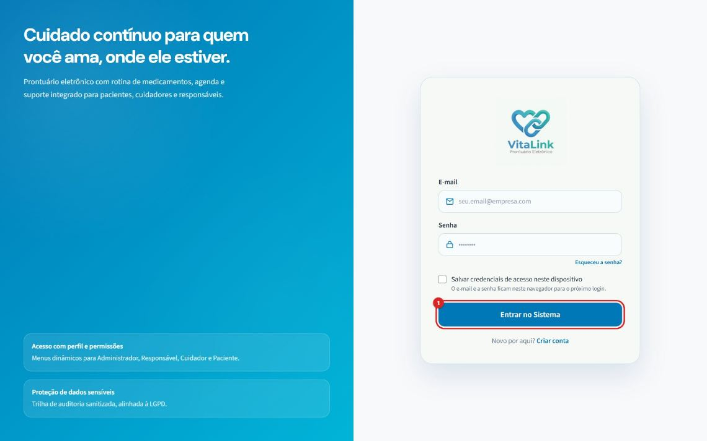
Comportamento esperado: o botão mostra “Autenticando...”. Em seguida o sistema abre o Painel (ou o Onboarding, se ainda não houver paciente). Se e-mail ou senha estiverem errados, um aviso vermelho aparece no cartão, sem detalhar o servidor.
| Campo | Tipo | Obrigatório | Descrição do dado esperado |
|---|---|---|---|
| Texto (e-mail) | Sim | Formato nome@dominio. Ex.: seu.email@empresa.com | |
| Senha | Senha | Sim | Mínimo 6 caracteres na tela de login; a senha forte vale no cadastro e na redefinição. |
| Salvar credenciais | Caixa de seleção | Não | Guarda e-mail e senha neste navegador para o próximo acesso. |
| Mensagem | Como corrigir |
|---|---|
| Informe o e-mail. / E-mail inválido. | Preencha um e-mail com @ e domínio. |
| Informe a senha. / A senha deve ter ao menos 6 caracteres. | Digite a senha completa. |
| Falha na autenticação / conta inativa | Confira Caps Lock. Se persistir, use Esqueceu a senha? ou peça ao administrador para reativar a conta em Usuários. |
💡 Dica prática. Marque salvar credenciais apenas em computador ou celular de uso pessoal. Em computador compartilhado, deixe desmarcado e clique em Sair ao terminar.
O login abre e volta sozinho? A sessão (token) dura algumas horas. Entre de novo.
Não lembro se a conta existe. Tente Criar conta com o mesmo e-mail: o sistema avisa se já estiver cadastrado.
Objetivo: registrar um novo usuário maior de 18 anos para depois entrar e, se for o caso, cadastrar o paciente.
Caminho: tela de login → link Criar conta → rota /registro.
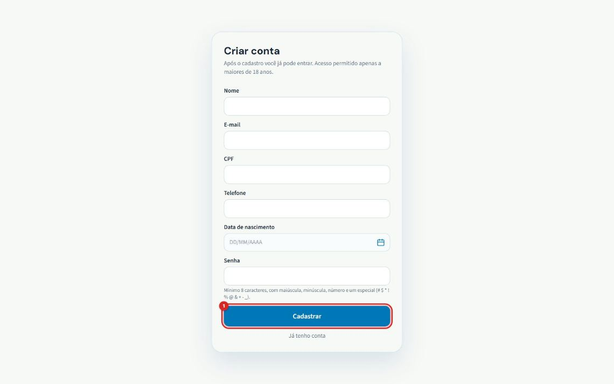
| Campo | Tipo | Obrigatório | Descrição do dado esperado |
|---|---|---|---|
| Nome | Texto | Sim | Nome completo do titular da conta. |
| Sim | Será o login. Precisa ser único no sistema. | ||
| CPF | Texto numérico | Sim | 11 dígitos válidos (dígitos verificadores). |
| Telefone | Texto numérico | Sim | Com DDD. Ex.: 48999998888. |
| Data de nascimento | Data (DD/MM/AAAA) | Sim | O titular precisa ter 18 anos ou mais. |
| Senha | Senha | Sim | Mínimo 8 caracteres, com maiúscula, minúscula, número e caractere especial. |
Erros comuns: “E-mail inválido.”; “CPF inválido.”; “Informe um telefone válido com DDD.”; “Cadastro restrito a maiores de 18 anos.”; senha fraca (o texto de ajuda aparece sob o campo). Corrija o campo e clique em Cadastrar novamente.
⚠️ Atenção. Menores de 18 anos não criam conta própria. O cuidado de um menor entra pelo cadastro de Paciente feito por um responsável ou administrador já logado.
Caminho: login → Esqueceu a senha? → /esqueci-senha.
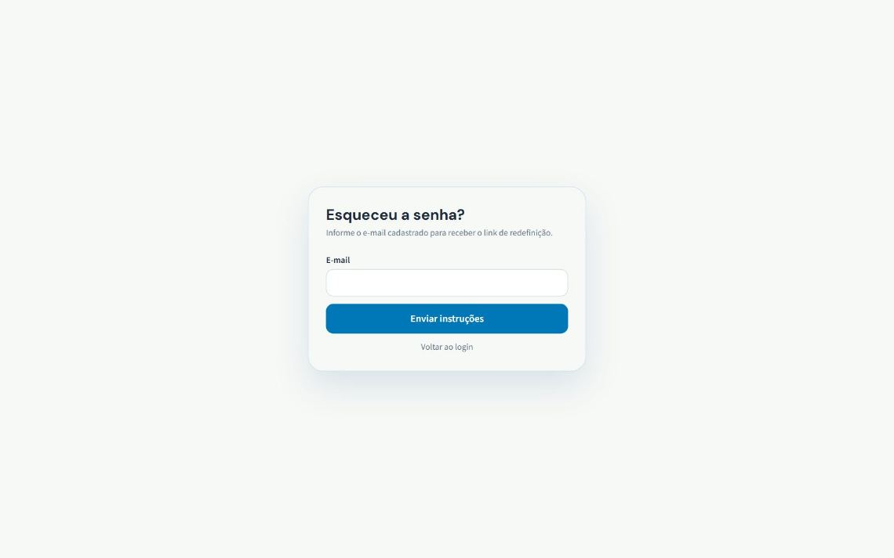
📌 Nota. Em homologação o e-mail pode não chegar. Peça ao administrador para redefinir a senha em Usuários.
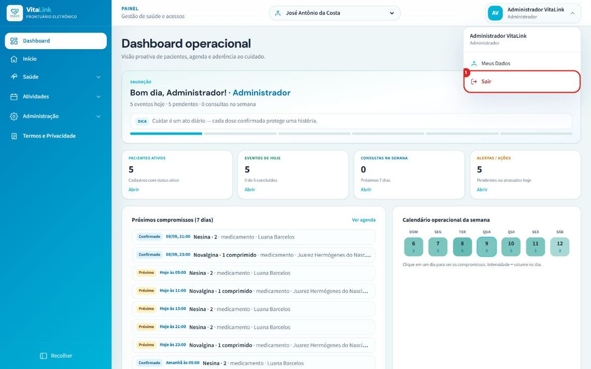
Sem um paciente vinculado, o VitaLink não libera a rotina (Início, medicamentos, agenda clínica). O onboarding cria ou vincula o primeiro paciente pela CPF.
Aberto automaticamente após o primeiro login, se o onboarding não estiver concluído. Rota /onboarding. Administrador, médico e atendente também cadastram em Saúde → Pacientes.
| Campo | Tipo | Obrigatório | Descrição do dado esperado |
|---|---|---|---|
| Nome | Texto | Sim | Nome completo do paciente. |
| Nascimento | Data | Sim | Data de nascimento no formato brasileiro. |
| CPF | Texto numérico | Sim | 11 dígitos. Se já cadastro, o sistema oferece vínculo. |
| Telefone | Texto | Não | Contato do paciente, quando houver. |
⚠️ Atenção. Sem paciente, só permanecem liberados cadastro de pacientes (para perfis administrativos), Meus Dados e Termos.
O CPF já está no sistema. Vincule. Não crie um segundo prontuário para a mesma pessoa.
Depois do login, a área de trabalho tem menu à esquerda, faixa superior (paciente ativo e conta) e conteúdo central. No módulo Início, há ainda a barra inferior de atalhos.
Qualquer tela autenticada. No celular, o menu lateral abre pelo ícone de três linhas no topo.
| Área | O que faz |
|---|---|
| Menu lateral | Módulos permitidos ao seu perfil. Grupos: Saúde, Atividades, Administração. |
| Topo | Identificação “Painel”, seletor de paciente e menu da conta. |
| Conteúdo | Lista, ficha ou calendário do módulo escolhido. |
| Barra inferior (Início) | Sintomas, Perfil, Eventos, Especialistas, Agenda, Corpo, Linha, Medicamentos, Exames/Receitas. |
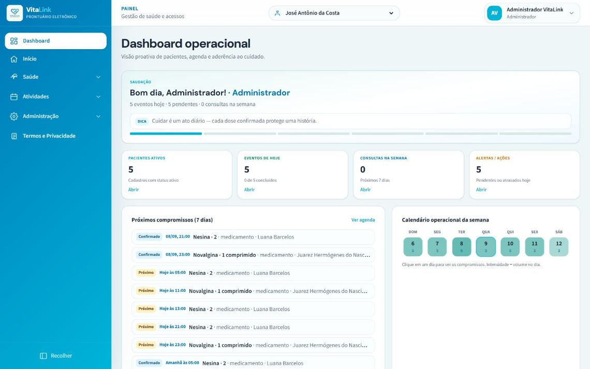
📌 Nota. Quem tem um único paciente ainda vê o nome no topo. Quem tem vários precisa selecionar antes de registrar a rotina.
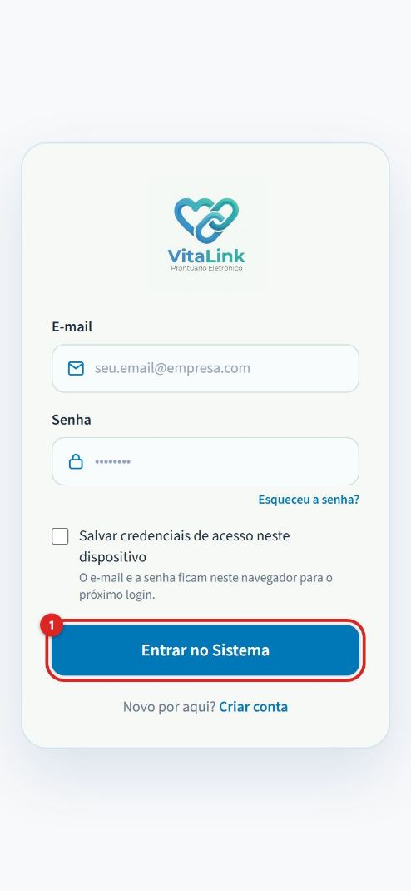
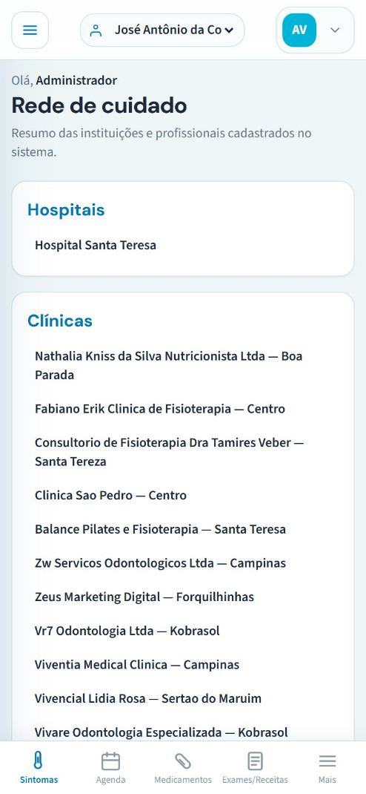
💡 Dica prática. No celular, os atalhos do Início ficam na barra inferior; os demais módulos estão no menu hambúrguer.
O menu não é igual para todos. O administrador define, em Acessos, o que cada perfil pode ler, criar, editar e excluir. Sem “ler”, o item some da barra lateral.
Administração → Acessos (rota /acessos). Somente quem tem permissão de administração.
Perfil Administrador (ou equivalente com acesso a Acessos). Os demais usuários só sentem o efeito nos menus.
| Perfil | Uso típico |
|---|---|
| Administrador | Usuários, perfis, acessos, auditoria e todos os cadastros. |
| Médico | Pacientes, medicamentos, consultas, linha do tempo, rede de saúde. |
| Atendente | Apoio operacional, conforme a matriz de acessos. |
| Cuidador | Rotina dos pacientes vinculados: doses, eventos, agenda. Não cria/exclui pacientes. |
| Responsável | Acompanha o familiar; pode cadastrar cuidador, responsável e paciente se a permissão existir. |
| Paciente | Consulta a própria rotina autorizada. |
| Autocuidado | Cuida de si: Início, médicos, estabelecimentos, farmácias e termos. |
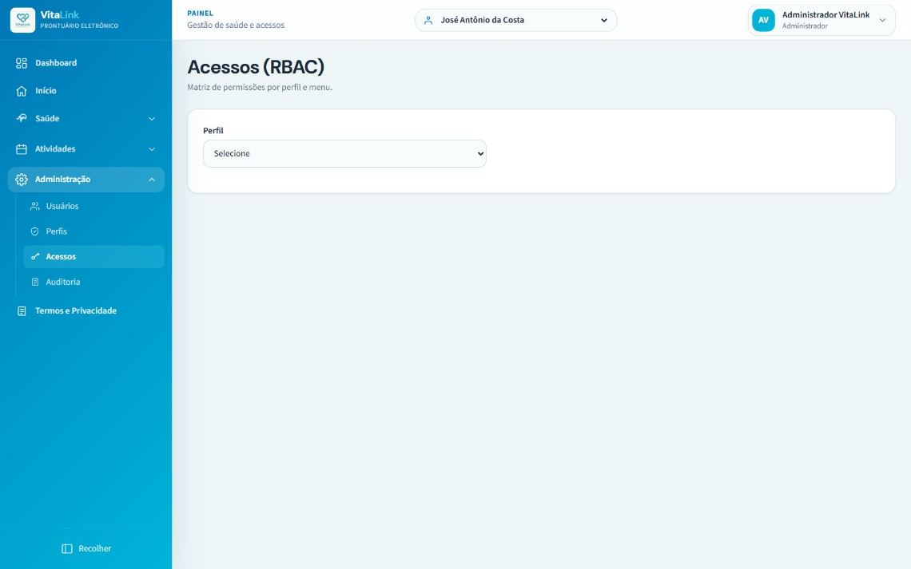
⚠️ Atenção. Tirar a leitura de um menu remove o item da barra na próxima sessão. Não desmarque o próprio acesso de administrador sem outro administrador ativo.
Não vejo um menu. Não é falha do navegador: falta permissão de leitura. Peça o ajuste em Acessos.
O Dashboard operacional mostra o recado do dia, quantos pacientes estão ativos, eventos de hoje, consultas da semana e alertas pendentes — para você decidir o que tratar primeiro.
Menu Dashboard · rota /dashboard. Também é o destino padrão após o login (quando o onboarding já foi concluído).
Conta autenticada e permissão de leitura do Dashboard. Indicadores clínicos ficam mais ricos quando há pacientes e agenda cadastrados.
Comportamento esperado: os números refletem o paciente ativo e os cadastros do ambiente. Não há botão Salvar nesta tela: ela é só leitura e atalhos.
💡 Dica prática. Use o Painel de manhã para ver o que está atrasado (cartão laranja de alertas) antes de abrir o Início.
Os números estão zerados. Ainda não há eventos, ou o filtro de paciente não tem rotina. Cadastre a agenda e os medicamentos.
O Início é o prontuário do dia a dia do paciente selecionado no topo: rede de cuidado, ficha, eventos, especialistas, agenda, mapa do corpo, linha do tempo, medicamentos e documentos.
Menu Início · /inicio. Atalhos na barra inferior (no celular, parte dos itens fica em Mais).
Pelo menos um paciente vinculado e selecionado no topo. Permissão de leitura do Início.
⚠️ Atenção. Se a tela pedir para cadastrar um paciente, conclua o onboarding ou use Saúde → Pacientes.
Objetivo: ver o resumo da rede (hospitais e clínicas) e chegar rápido aos outros atalhos da barra inferior.
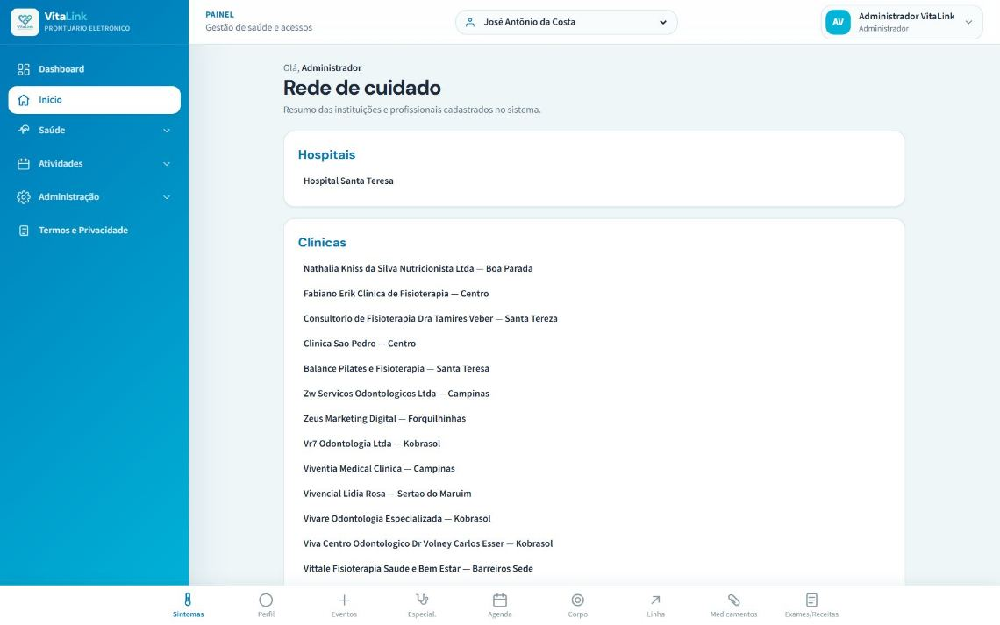
Objetivo: consultar e atualizar dados pessoais, contato, tipo sanguíneo, diagnóstico, alergias e observações do paciente ativo.
Caminho: Início → Perfil na barra inferior · /inicio/perfil.
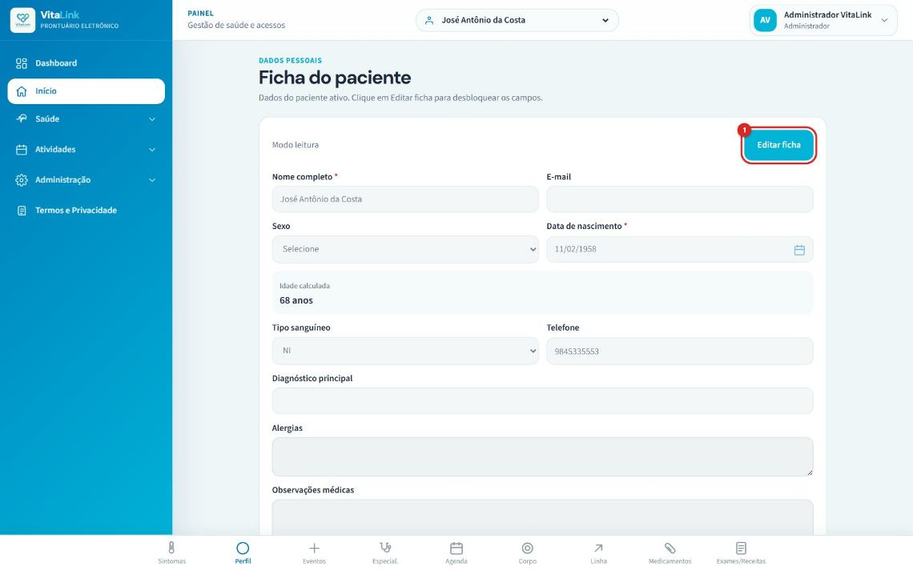
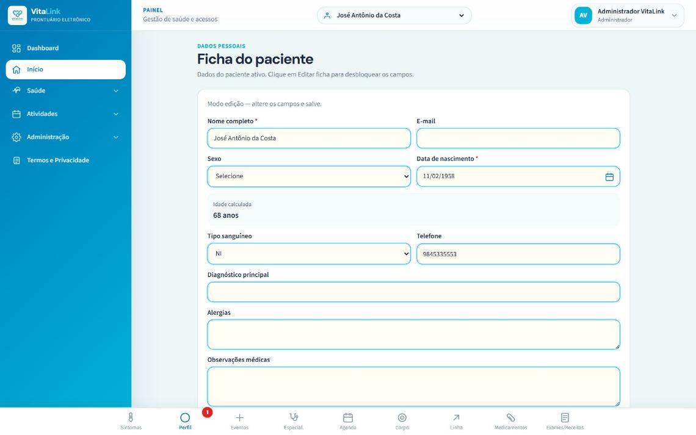
| Campo | Tipo | Obrigatório | Descrição do dado esperado |
|---|---|---|---|
| Nome completo | Texto | Sim | Nome do paciente ativo. |
| Não | Contato eletrônico do paciente. | ||
| Sexo | Seleção | Não | Masculino, feminino ou outro conforme as opções da lista. |
| Data de nascimento | Data | Sim | Usada também para calcular a idade na tela. |
| Tipo sanguíneo | Seleção | Não | A+, A−, B+, B−, AB+, AB−, O+, O− ou NI. |
| Telefone | Texto | Não | Telefone principal. |
| Diagnóstico principal | Texto longo | Não | Resumo clínico principal. |
| Alergias | Texto longo | Não | Alergias conhecidas. Preencha com clareza para o cuidador. |
| Observações médicas | Texto longo | Não | Notas livres da equipe. |
Comportamento esperado: após salvar, os campos voltam a ficar protegidos até um novo Editar ficha. A idade é recalculada pela data de nascimento.
⚠️ Atenção. Salve ou cancele antes de trocar o paciente no combo. Senão você pode gravar a ficha no registro errado.
Objetivo: diário de bordo — sintomas, observações e ocorrências do paciente ativo.
Caminho: Início → Eventos · /inicio/eventos.
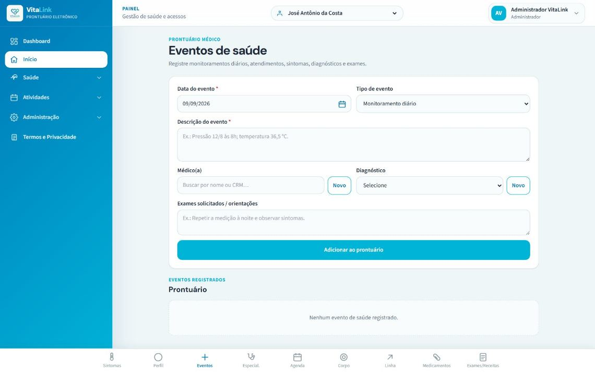
Objetivo: profissionais e locais usados no cuidado, com busca no contexto do Início.
Caminho: /inicio/especialistas.
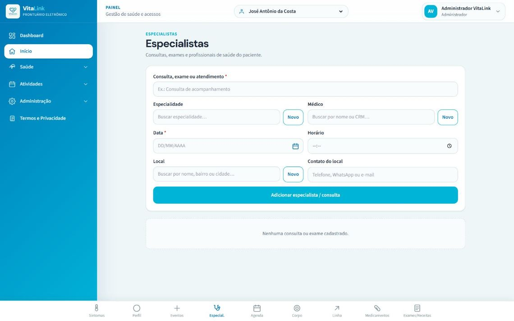
Objetivo: compromissos do paciente (consulta, exame, rotina, medicação) e, quando visível, envio ao Google Agenda.
Caminho: /inicio/agenda.
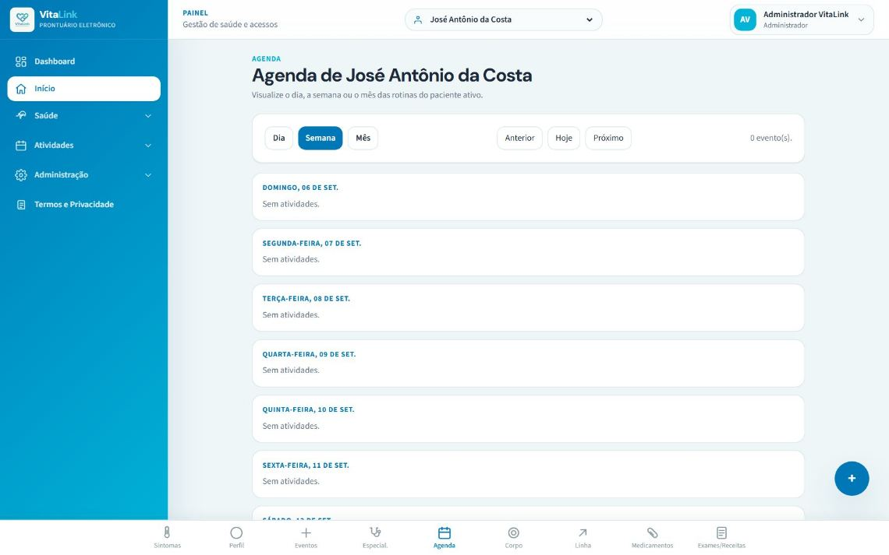
Objetivo: registrar queixas ou pontos de atenção no mapa do corpo.
Caminho: /inicio/corpo.
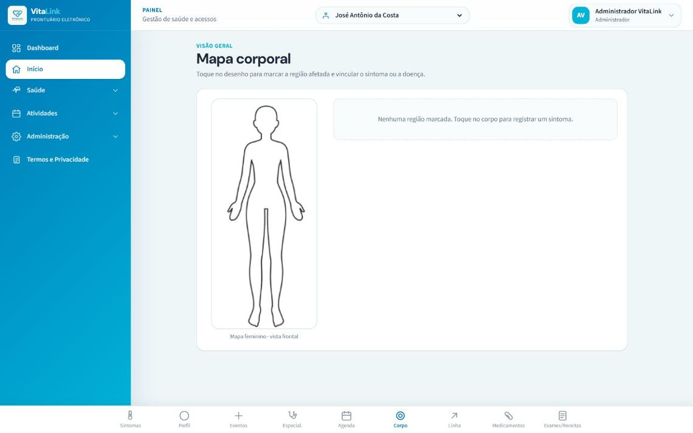
Objetivo: histórico unificado (doses, eventos, consultas) em ordem cronológica.
Caminho: /inicio/linha.
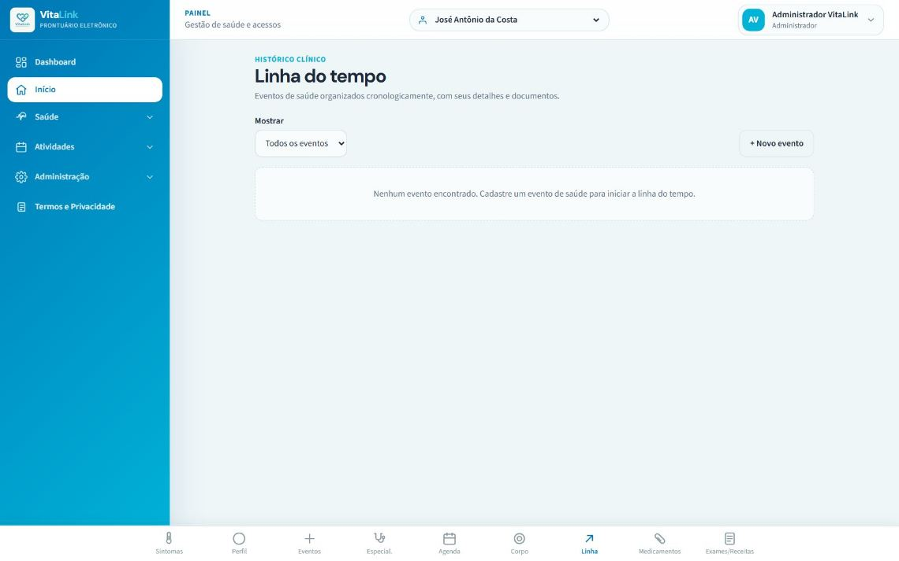
Objetivo: posologia, estoque, farmácia, compras e impressão da lista do paciente ativo.
Caminho: Início → Medicamentos · /inicio/meds.
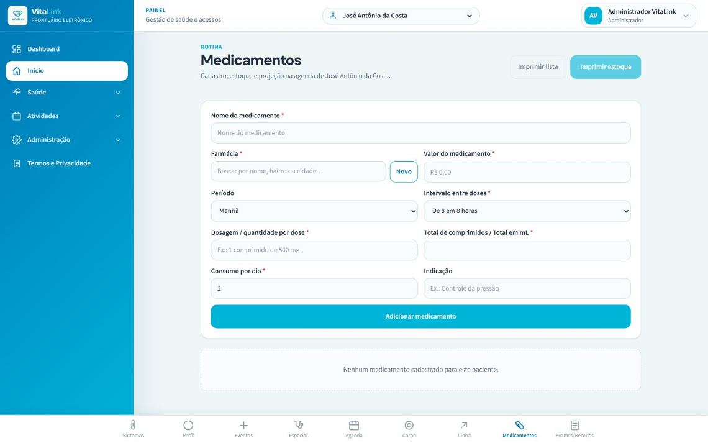
💡 Dica prática. Digite parte do nome da farmácia. O catálogo público cobre a Grande Florianópolis; as demais você cadastra em Farmácias.
⚠️ Atenção. Confirme a exclusão de um medicamento: a lista de horários daquele item deixa de valer para o paciente ativo.
Objetivo: documentos clínicos do paciente ativo, o mesmo conjunto da tela Saúde, já filtrado.
Caminho: /inicio/docs.
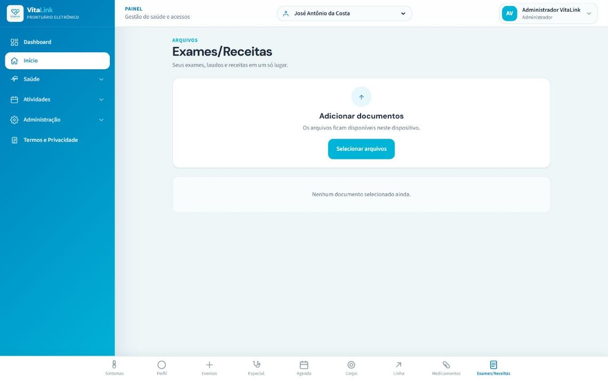
As telas de Saúde seguem o padrão lista + formulário: buscar, filtrar por status, Novo cadastro, Editar e Excluir (inativar), conforme a permissão.
📌 Nota. O botão Novo cadastro só aparece se o perfil puder criar. Sem ele, você ainda pode consultar a lista se tiver leitura.
Objetivo: prontuário cadastral — identificação, convênio, endereço, responsáveis, médicos, foto, carteirinha e anamnese.
Caminho: Saúde → Pacientes · /pacientes.
Pré-requisitos: permissão no menu Pacientes. CPF em mãos. Para vínculos, cadastre antes responsáveis e médicos, se for associá-los.
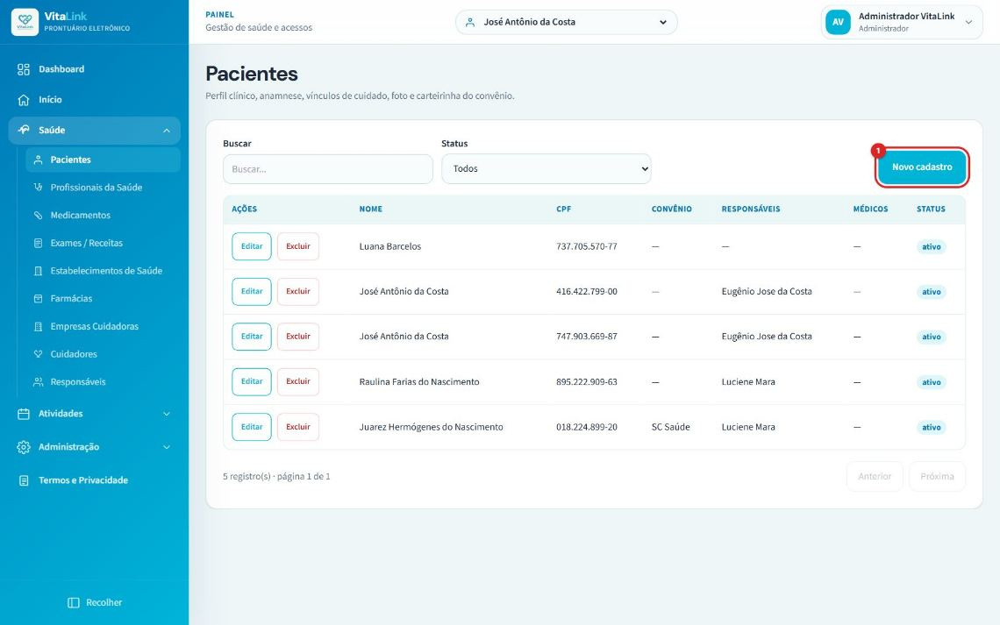
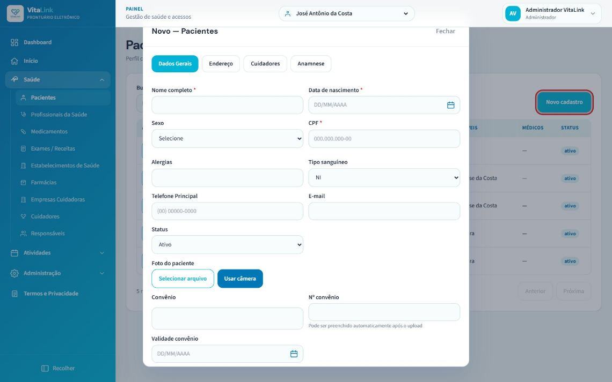
| Campo | Tipo | Obrigatório | Descrição do dado esperado |
|---|---|---|---|
| Nome completo | Texto | Sim | Nome do paciente. |
| Data de nascimento | Data | Sim | DD/MM/AAAA. |
| Sexo | Seleção | Não | Usado também no mapa por especialidade. |
| CPF | Texto numérico | Sim | Único. Se já existir, o sistema pede para vincular. |
| Alergias | Texto longo | Não | Alergias conhecidas. |
| Tipo sanguíneo | Seleção | Não | Inclui a opção NI. |
| Telefone principal | Texto | Não | Com DDD. |
| Não | Contato do paciente. | ||
| Status | Seleção | Sim | Ativo ou inativo. |
| Foto do paciente | Arquivo | Não | Imagem de identificação. |
| Convênio | Texto | Não | Nome do plano. Pode ser sugerido pelo upload da carteirinha. |
| Nº convênio | Texto | Não | Número da carteirinha. |
| Validade convênio | Data | Não | Validade da carteirinha. |
| Carteirinha frente/verso | Arquivo | Não | Imagens da carteirinha. |
| Responsável(eis) | Seleção múltipla | Não | Família ou responsáveis já cadastrados. |
| Médico(s) principal(is) | Busca | Não | Médicos da rede, busca por nome/CRM. |
| Observações | Texto longo | Não | Notas livres. |
| CEP | Texto (máscara) | Não | 8 dígitos. Ao sair do campo, o sistema tenta preencher logradouro, bairro, cidade e UF. |
| Logradouro | Texto | Não | Rua, avenida ou equivalente. |
| Número | Texto | Não | Número do imóvel. |
| Complemento | Texto | Não | Apto, bloco, sala. |
| Bairro | Texto | Não | Bairro. |
| Cidade | Texto | Não | Município. |
| UF | Seleção | Não | Unidade da federação. |
Anamnese (aba): doenças pré-existentes, histórico familiar, cirurgias, sono, alimentação, mobilidade, autonomia, medicamentos contraindicados, alergias alimentares, limitações, instruções especiais, episódios de confusão e contato de emergência (nome e telefone).
Comportamento esperado: ao salvar, o paciente entra na lista e pode ser escolhido no combo do topo. Excluir pede confirmação e inativa o registro.
| Mensagem / situação | O que fazer |
|---|---|
| Campos obrigatórios em branco (borda vermelha ou aviso) | Preencha os campos marcados e clique em Salvar de novo. |
| Registro duplicado (CPF, CRM, e-mail ou CNPJ já existente) | Busque o cadastro na lista e use Editar, ou vincule o existente em vez de criar outro. |
| Sem permissão / botão ausente | Seu perfil não tem criar/editar/excluir. Peça ao administrador para ajustar em Administração → Acessos. |
| Confirmação ao clicar em Excluir | Confirme apenas se deseja inativar o paciente. A ação impacta listas e vínculos. |
| Sessão expirada (volta ao login) | Entre novamente. Alterações não salvas são perdidas. |
⚠️ Atenção. Não duplique CPF. O aviso de paciente existente existe para unificar o prontuário.
Objetivo: cadastro de profissionais com CRM, especialidade e locais de atendimento.
Caminho: Saúde → Profissionais da Saúde · /medicos.
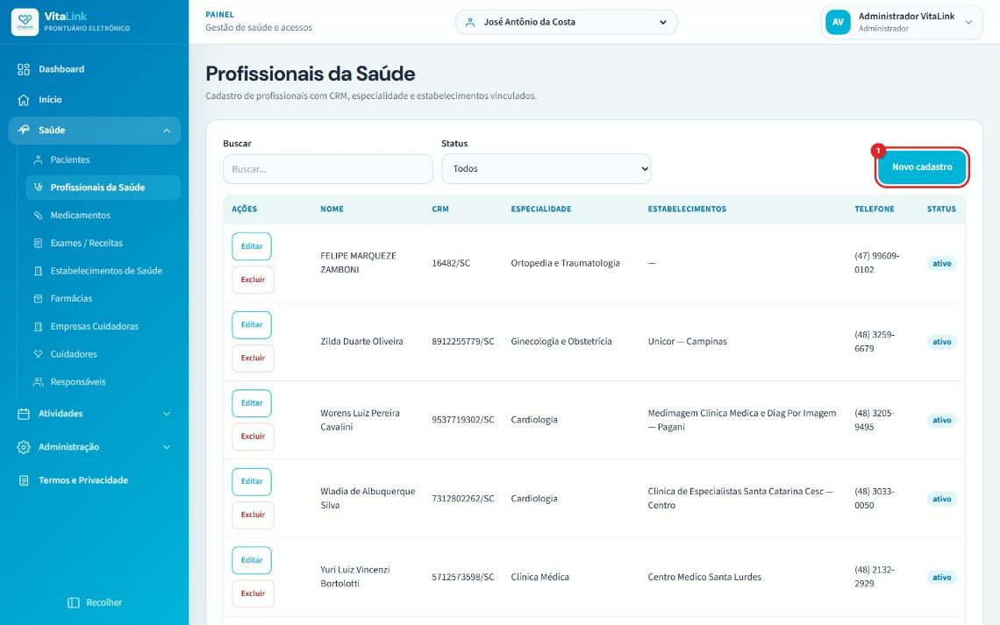
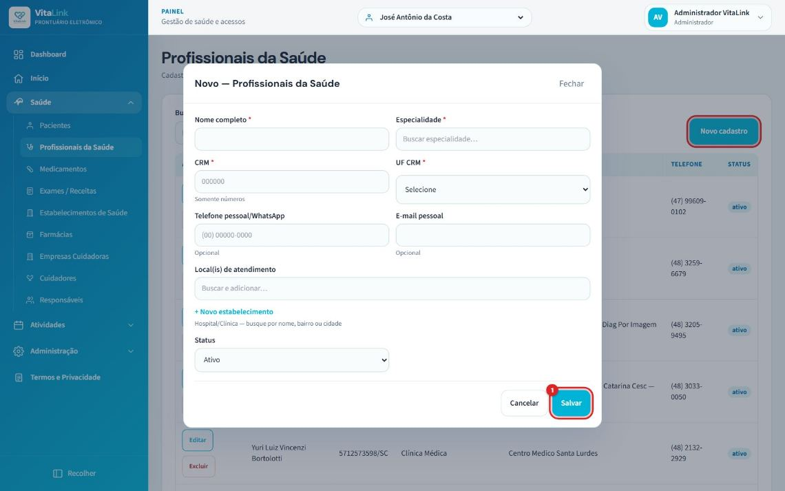
| Campo | Tipo | Obrigatório | Descrição do dado esperado |
|---|---|---|---|
| Nome completo | Texto | Sim | Nome do profissional. |
| Especialidade | Busca / texto | Sim | Digite para buscar no catálogo ou informe livremente. |
| CRM | Texto numérico | Sim | 4 a 10 dígitos. Único por UF. |
| UF CRM | Seleção | Sim | Estado de registro do CRM. |
| Telefone pessoal/WhatsApp | Texto | Não | Com DDD. |
| E-mail pessoal | Não | Contato profissional. | |
| Local(is) de atendimento | Busca múltipla | Não | Hospitais e clínicas da rede. |
| Status | Seleção | Sim | Ativo ou inativo. |
| CEP | Texto (máscara) | Não | 8 dígitos. Ao sair do campo, o sistema tenta preencher logradouro, bairro, cidade e UF. |
| Logradouro | Texto | Não | Rua, avenida ou equivalente. |
| Número | Texto | Não | Número do imóvel. |
| Complemento | Texto | Não | Apto, bloco, sala. |
| Bairro | Texto | Não | Bairro. |
| Cidade | Texto | Não | Município. |
| UF | Seleção | Não | Unidade da federação. |
| Mensagem / situação | O que fazer |
|---|---|
| Campos obrigatórios em branco (borda vermelha ou aviso) | Preencha os campos marcados e clique em Salvar de novo. |
| Registro duplicado (CPF, CRM, e-mail ou CNPJ já existente) | Busque o cadastro na lista e use Editar, ou vincule o existente em vez de criar outro. |
| Sem permissão / botão ausente | Seu perfil não tem criar/editar/excluir. Peça ao administrador para ajustar em Administração → Acessos. |
| Confirmação ao clicar em Excluir | Confirme apenas se deseja inativar o médico. A ação impacta listas e vínculos. |
| Sessão expirada (volta ao login) | Entre novamente. Alterações não salvas são perdidas. |
CRM duplicado na mesma UF impede o salvamento. Corrija o número ou a UF, ou edite o cadastro já existente.
Objetivo: catálogo de medicamentos da operação (nome comercial, farmácia, posologia, estoque, prescritor).
Caminho: Saúde → Medicamentos · /remedios.
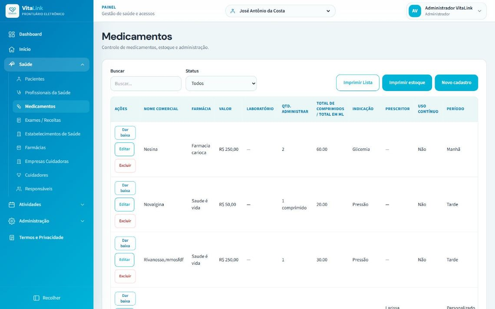
| Campo | Tipo | Obrigatório | Descrição do dado esperado |
|---|---|---|---|
| Nome comercial | Texto | Sim | Nome da embalagem. |
| Princípio ativo | Texto | Sim | Substância. |
| Farmácia | Busca | Não | Onde o item costuma ser comprado. |
| Valor do medicamento | Moeda | Sim | Valor de referência. |
| Quantidade a administrar | Número | Sim | Dose de cada tomada. |
| Total de comprimidos / mL | Número | Sim | Estoque atual. |
| Indicação | Texto | Sim | Para que o remédio foi prescrito. |
| Médico prescritor | Busca | Não | Profissional que prescreveu. |
| Uso contínuo | Seleção | Não | Sim ou não. |
| Período / Horário | Seleção | Não | Manhã, tarde, noite ou hora exata. |
| Hora exata | Hora | Condicional | Obrigatória quando o período for hora exata. |
| Status | Seleção | Sim | Ativo ou inativo. |
Caminho: Saúde → Estabelecimentos de Saúde · /hospitais.
O catálogo público da Grande Florianópolis já vem preenchido; você inclui os seus. Informe tipo (hospital, clínica ou laboratório), CNPJ válido e endereço (CEP preenche o logradouro).
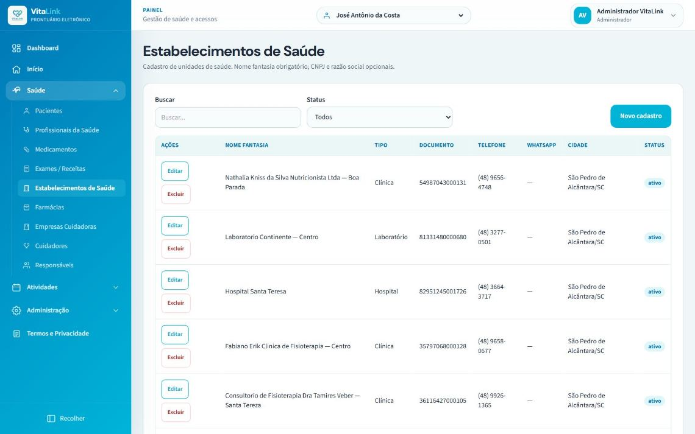
| Campo | Tipo | Obrigatório | Descrição do dado esperado |
|---|---|---|---|
| Nome fantasia | Texto | Sim | Nome de apresentação. |
| Tipo | Seleção | Sim | Hospital, clínica ou laboratório. |
| Documento (CNPJ) | Texto | Não | CNPJ válido, quando informado. |
| Telefone / WhatsApp | Texto | Não | Contatos. |
| CEP | Texto (máscara) | Não | 8 dígitos. Ao sair do campo, o sistema tenta preencher logradouro, bairro, cidade e UF. |
| Logradouro | Texto | Não | Rua, avenida ou equivalente. |
| Número | Texto | Não | Número do imóvel. |
| Complemento | Texto | Não | Apto, bloco, sala. |
| Bairro | Texto | Não | Bairro. |
| Cidade | Texto | Não | Município. |
| UF | Seleção | Não | Unidade da federação. |
| Status | Seleção | Sim | Ativo ou inativo. |
Caminho: /farmacias. Mesmo padrão de endereço e CNPJ. Use a busca no cadastro de medicamentos e nas compras.
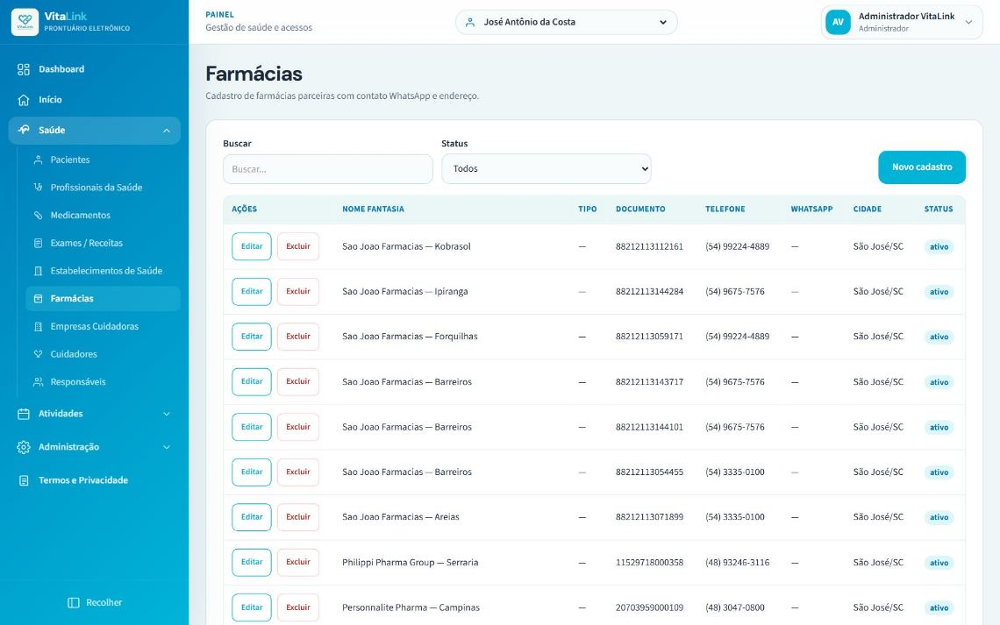
Caminho: /cuidadores e /responsaveis.
O cuidador só atua nos pacientes aos quais está vinculado (aba Cuidadores no paciente). Responsáveis podem ser associados na ficha do paciente.
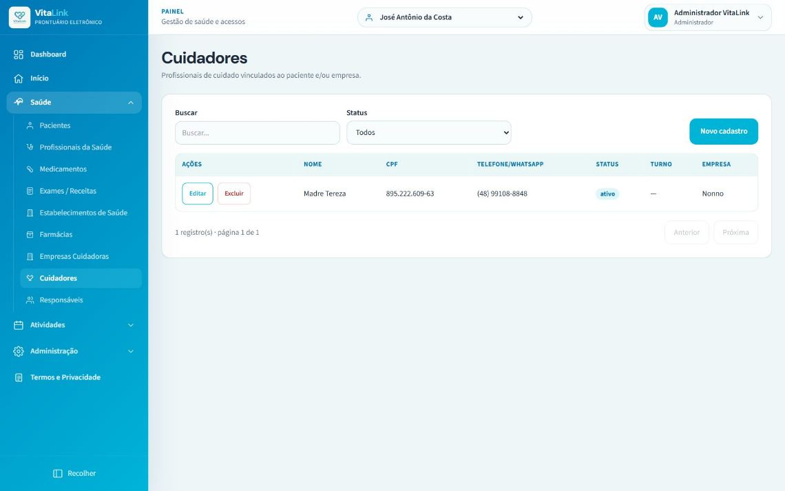
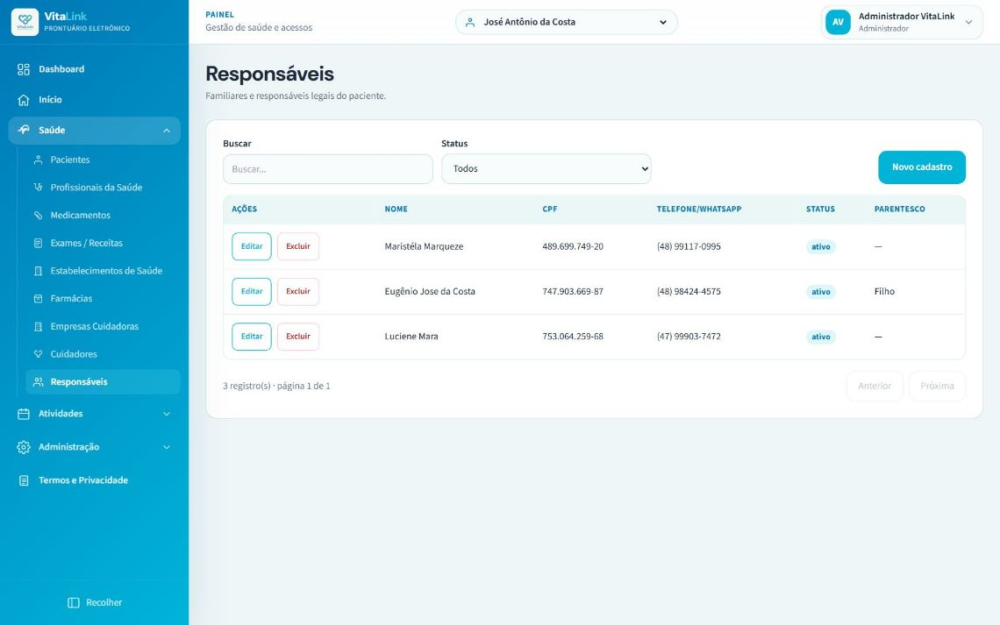
| Campo | Tipo | Obrigatório | Descrição do dado esperado |
|---|---|---|---|
| Nome | Texto | Sim | Nome completo. |
| CPF | Texto | Não | Quando informado, deve ser válido. |
| Telefone/WhatsApp | Texto | Não | Contato. |
| Turno / Empresa | Seleção / texto | Não | No cadastro de cuidador, quando aplicável. |
| Grau de parentesco | Texto | Não | No cadastro de responsável. |
| CEP | Texto (máscara) | Não | 8 dígitos. Ao sair do campo, o sistema tenta preencher logradouro, bairro, cidade e UF. |
| Logradouro | Texto | Não | Rua, avenida ou equivalente. |
| Número | Texto | Não | Número do imóvel. |
| Complemento | Texto | Não | Apto, bloco, sala. |
| Bairro | Texto | Não | Bairro. |
| Cidade | Texto | Não | Município. |
| UF | Seleção | Não | Unidade da federação. |
| Status | Seleção | Sim | Ativo ou inativo. |
Caminho: /empresas-cuidadoras. Razão social, contato e endereço da prestadora de cuidado.
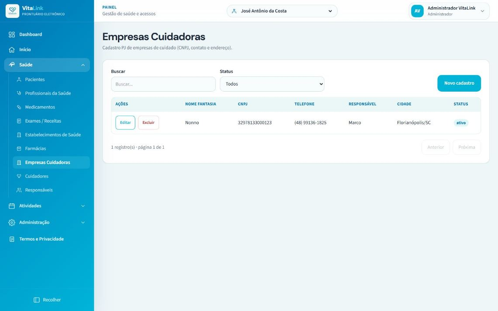
Objetivo: guardar o documento (PDF ou imagem) ligado ao paciente, com tipo, especialidade e data.
Caminho: Saúde → Exames / Receitas · /exames-receitas.
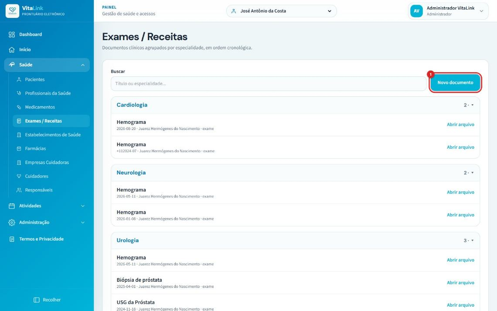
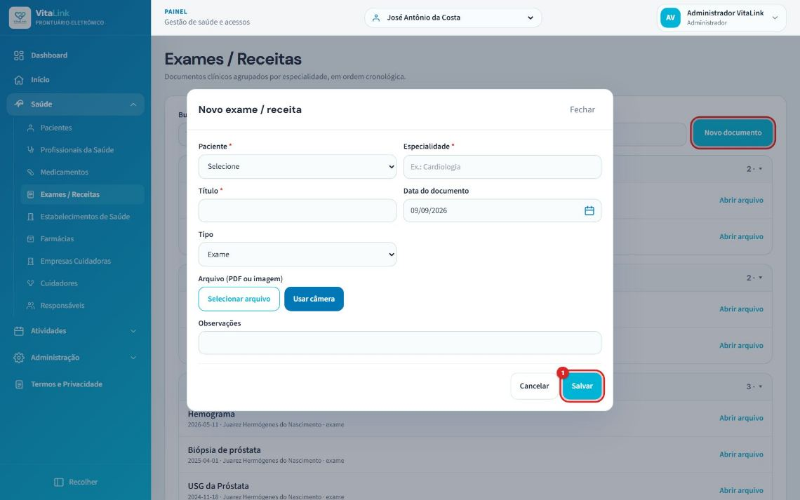
| Campo | Tipo | Obrigatório | Descrição do dado esperado |
|---|---|---|---|
| Paciente | Seleção | Sim | Paciente ao qual o documento pertence. |
| Especialidade | Texto / seleção | Sim | Área do documento. |
| Título | Texto | Sim | Nome de apresentação na lista. |
| Data do documento | Data | Não | Data impressa no papel ou do exame. |
| Tipo | Seleção | Não | Exame, receita ou outro tipo da lista. |
| Arquivo | PDF ou imagem | Não | Anexo do documento. |
| Observações | Texto | Não | Notas da equipe. |
| Mensagem / situação | O que fazer |
|---|---|
| Campos obrigatórios em branco (borda vermelha ou aviso) | Preencha os campos marcados e clique em Salvar de novo. |
| Registro duplicado (CPF, CRM, e-mail ou CNPJ já existente) | Busque o cadastro na lista e use Editar, ou vincule o existente em vez de criar outro. |
| Sem permissão / botão ausente | Seu perfil não tem criar/editar/excluir. Peça ao administrador para ajustar em Administração → Acessos. |
| Confirmação ao clicar em Excluir | Confirme apenas se deseja inativar o documento. A ação impacta listas e vínculos. |
| Sessão expirada (volta ao login) | Entre novamente. Alterações não salvas são perdidas. |
Objetivo: calendário mensal e lista de compromissos da operação.
Caminho: Atividades → Agenda · /agenda.
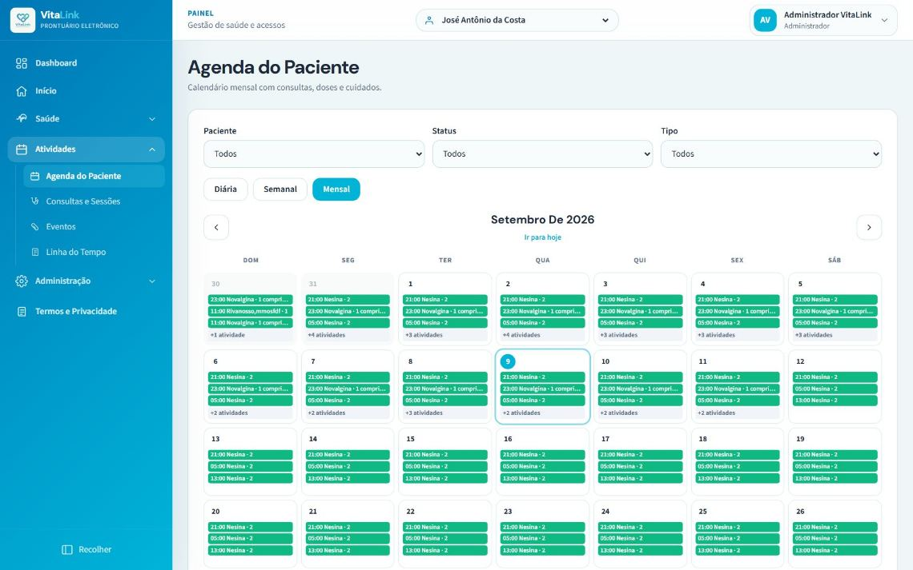
Objetivo: agendar atendimento com paciente, profissional, especialidade, data/hora e local; marcar como concluída depois.
Caminho: Atividades → Consultas · /consultas.
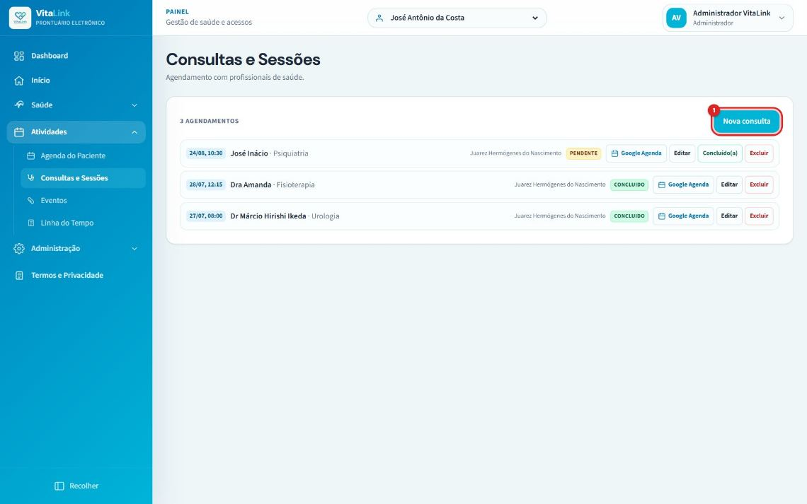
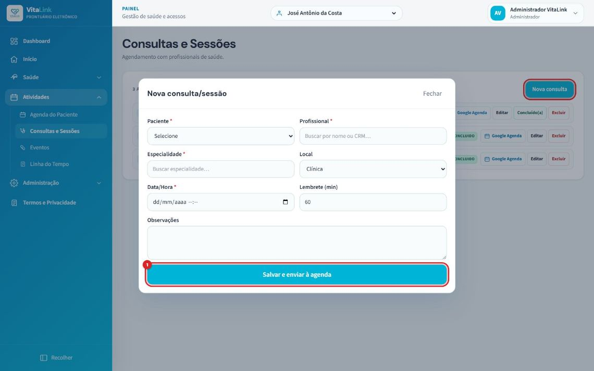
| Campo | Tipo | Obrigatório | Descrição do dado esperado |
|---|---|---|---|
| Paciente | Seleção | Sim | Quem será atendido. |
| Profissional | Busca | Não | Médico ou profissional, busca por nome/CRM. |
| Especialidade | Busca / texto | Não | Área do atendimento. |
| Local | Texto / busca | Não | Onde ocorre a consulta. |
| Data/Hora | Data e hora | Sim | Início do atendimento. |
| Lembrete (min) | Número | Não | Antecedência do aviso, em minutos. |
| Observações | Texto | Não | Notas do agendamento. |
| Mensagem / situação | O que fazer |
|---|---|
| Campos obrigatórios em branco (borda vermelha ou aviso) | Preencha os campos marcados e clique em Salvar de novo. |
| Registro duplicado (CPF, CRM, e-mail ou CNPJ já existente) | Busque o cadastro na lista e use Editar, ou vincule o existente em vez de criar outro. |
| Sem permissão / botão ausente | Seu perfil não tem criar/editar/excluir. Peça ao administrador para ajustar em Administração → Acessos. |
| Confirmação ao clicar em Excluir | Confirme apenas se deseja inativar o consulta. A ação impacta listas e vínculos. |
| Sessão expirada (volta ao login) | Entre novamente. Alterações não salvas são perdidas. |
💡 Dica prática. Cadastre o médico antes, em Profissionais da Saúde, para a busca trazer CRM e especialidade automaticamente.
Objetivo: tarefas recorrentes (horário, descrição, paciente) e acompanhamento do dia.
Caminho: /rotina.
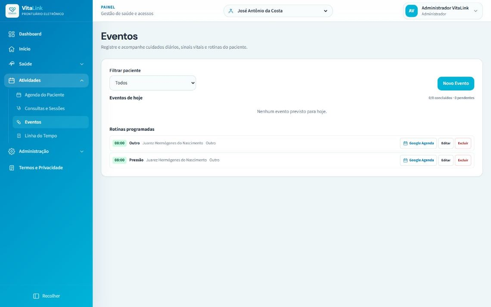
| Campo | Tipo | Obrigatório | Descrição do dado esperado |
|---|---|---|---|
| Paciente | Seleção | Sim | Paciente da tarefa. |
| Tipo | Seleção | Não | Classificação da rotina. |
| Horário | Hora | Sim | Hora prevista. |
| Data | Data | Sim | Início da vigência ou do dia. |
| Descrição | Texto | Não | O que deve ser feito. |
Objetivo: visão contínua para o médico e a família revisarem o histórico.
Caminho: /timeline. Filtre por paciente e palavras-chave.
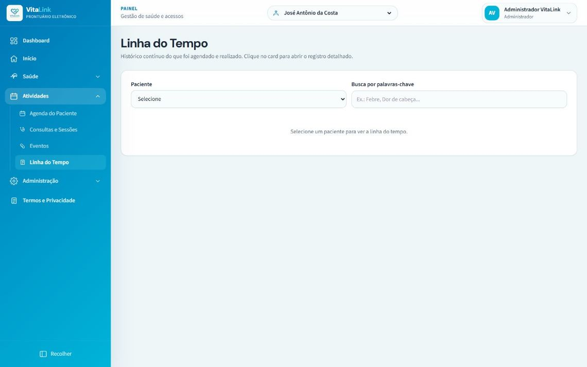
Objetivo: criar contas, associar perfil, inativar e redefinir senha.
Caminho: Administração → Usuários · /usuarios.
Pré-requisitos: perfil administrador. O responsável, quando permitido, só cria perfis da própria rede (cuidador, responsável, paciente).
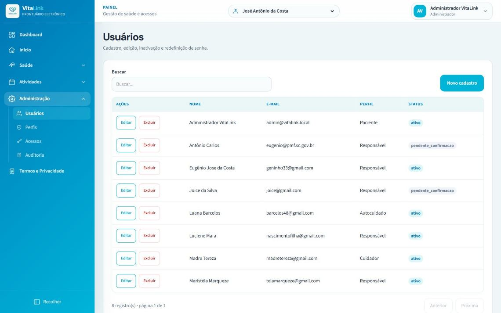
| Campo | Tipo | Obrigatório | Descrição do dado esperado |
|---|---|---|---|
| Nome | Texto | Sim | Nome da pessoa da conta. |
| Sim | Login. Precisa ser único. | ||
| Perfil | Seleção | Sim | Administrador, Médico, Cuidador etc. |
| Status | Seleção | Sim | Ativo entra; inativo é recusado no login. |
⚠️ Atenção. Inativar um usuário impede o próximo login. Confirme se não é o único administrador.
| Mensagem / situação | O que fazer |
|---|---|
| Campos obrigatórios em branco (borda vermelha ou aviso) | Preencha os campos marcados e clique em Salvar de novo. |
| Registro duplicado (CPF, CRM, e-mail ou CNPJ já existente) | Busque o cadastro na lista e use Editar, ou vincule o existente em vez de criar outro. |
| Sem permissão / botão ausente | Seu perfil não tem criar/editar/excluir. Peça ao administrador para ajustar em Administração → Acessos. |
| Confirmação ao clicar em Excluir | Confirme apenas se deseja inativar o usuário. A ação impacta listas e vínculos. |
| Sessão expirada (volta ao login) | Entre novamente. Alterações não salvas são perdidas. |
Caminho: /perfis. Nome e status do papel (Administrador, Médico, Cuidador…).
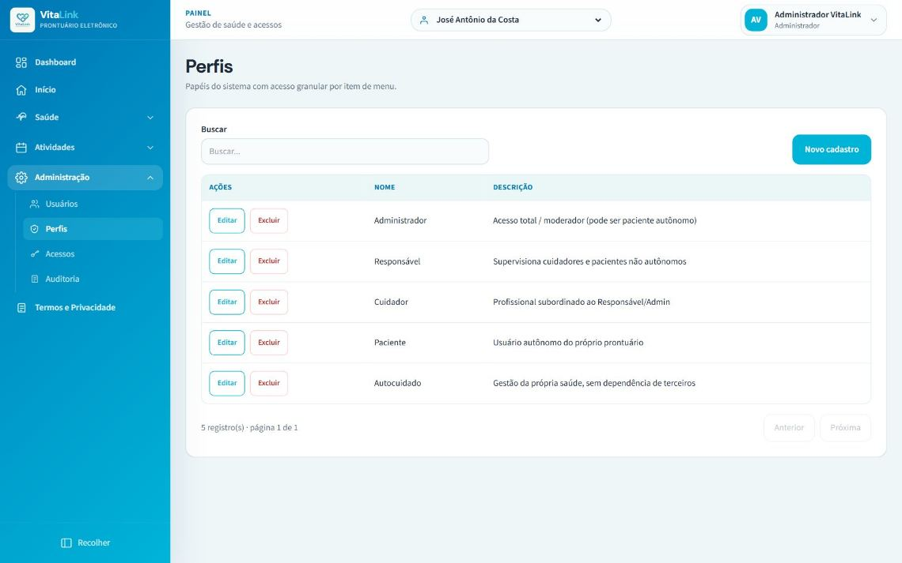
Ver o capítulo 5. A matriz é a fonte da verdade dos menus.
Objetivo: trilha de quem fez o quê (login, cadastros, alterações), sem gravar o conteúdo clínico completo (LGPD).
Caminho: /auditoria.
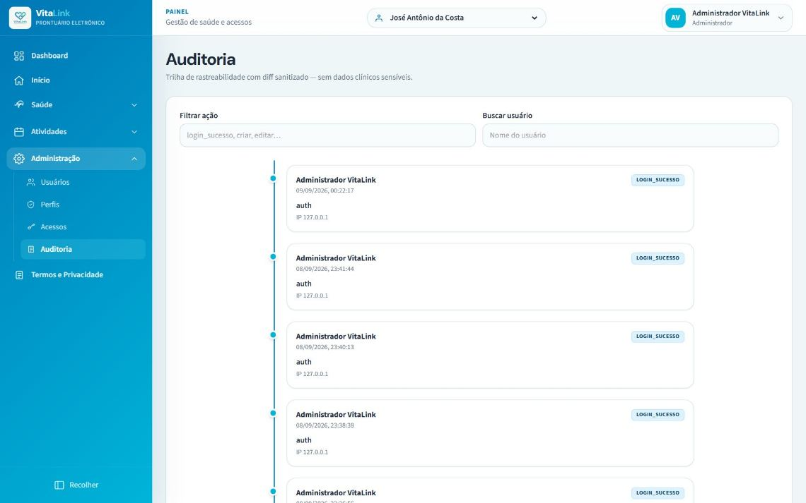
📌 Nota. Use a auditoria para investigar acessos indevidos, não para reler o prontuário. O detalhe clínico está nas telas de saúde.
Objetivo: ver a identificação da conta logada e solicitar troca de senha. Isto não é a ficha clínica do paciente.
Caminho: menu da conta → Meus Dados · /meus-dados.
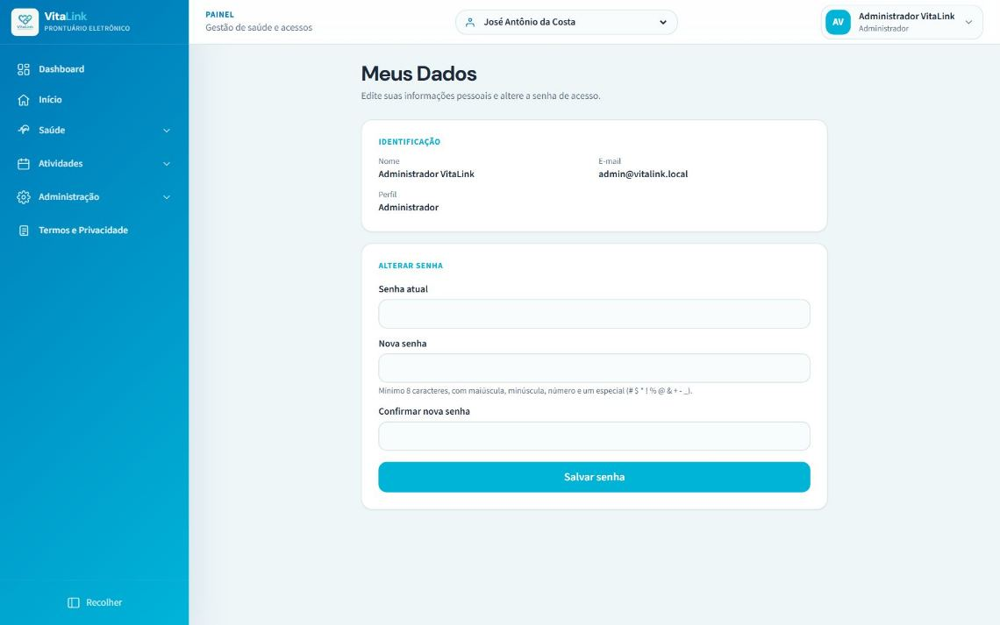
| Campo | Tipo | Obrigatório | Descrição do dado esperado |
|---|---|---|---|
| Senha atual | Senha | Sim | Senha em uso. |
| Nova senha | Senha | Sim | Regra de senha forte (mínimo 8 caracteres, maiúscula, minúscula, número e especial). |
| Confirmar nova senha | Senha | Sim | Deve ser idêntica à nova senha. |
| Mensagem | Como corrigir |
|---|---|
| Preencha os campos de senha. | Informe senha atual e nova senha. |
| Texto da senha fraca | Siga o hint abaixo do campo (tamanho e tipos de caractere). |
| A confirmação não confere com a nova senha. | Digite a mesma senha nos dois campos. |
📌 Nota. A troca de senha nesta tela pode estar em integração com a API. Se a mensagem indicar “em breve”, peça a redefinição ao administrador em Usuários.
Caminho: Termos e Privacidade · /termos. O aceite é exigido no cadastro da conta.
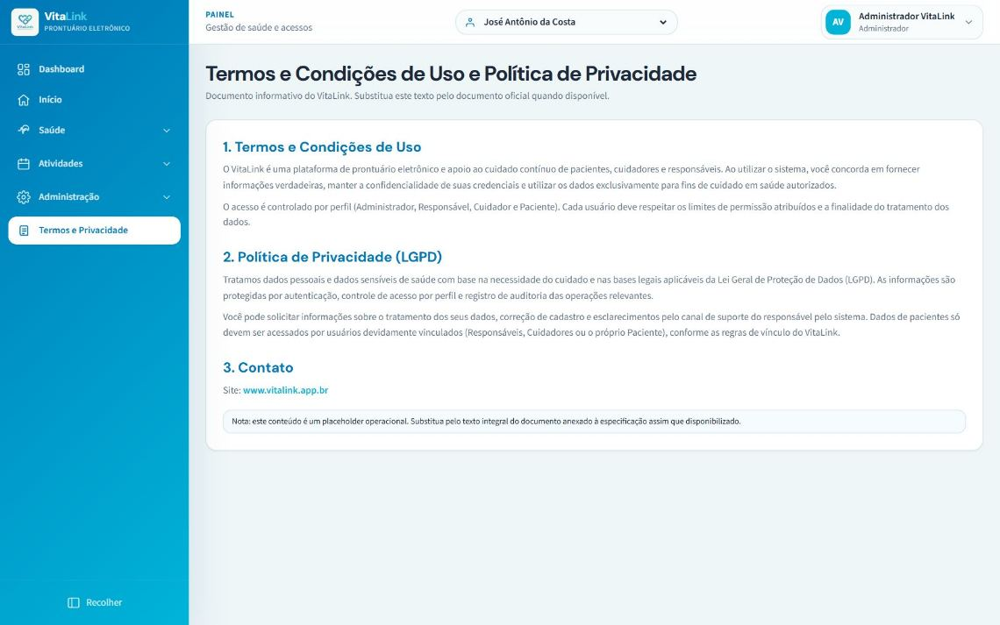
Não vejo um menu. Falta permissão de leitura. Peça ajuste em Acessos.
Troquei o paciente e a ficha não mudou. Salve ou cancele a edição, confira o nome no topo e, se preciso, atualize a página.
Não entro no Início. Cadastre ou vincule um paciente (onboarding ou Pacientes).
Farmácia ou hospital não aparece na busca. Digite parte do nome. Fora da Grande Florianópolis, cadastre em Farmácias ou Estabelecimentos.
A sessão caiu. O token expira em algumas horas. Entre de novo.
Posso usar no celular? Sim. Menu hambúrguer no topo; no Início, barra inferior.
| Tela | Caminho no menu | Rota |
|---|---|---|
| Login | — | /login |
| Criar conta | Login → Criar conta | /registro |
| Esqueci a senha | Login → Esqueceu a senha? | /esqueci-senha |
| Onboarding | Automático no primeiro uso | /onboarding |
| Painel | Dashboard | /dashboard |
| Início / Sintomas | Início | /inicio |
| Ficha do paciente | Início → Perfil | /inicio/perfil |
| Eventos | Início → Eventos | /inicio/eventos |
| Especialistas | Início → Especial. | /inicio/especialistas |
| Agenda (Início) | Início → Agenda | /inicio/agenda |
| Corpo | Início → Corpo | /inicio/corpo |
| Linha (Início) | Início → Linha | /inicio/linha |
| Medicamentos (Início) | Início → Medicamentos | /inicio/meds |
| Exames (Início) | Início → Exames/Receitas | /inicio/docs |
| Pacientes | Saúde → Pacientes | /pacientes |
| Médicos | Saúde → Profissionais da Saúde | /medicos |
| Remédios | Saúde → Medicamentos | /remedios |
| Exames e receitas | Saúde → Exames / Receitas | /exames-receitas |
| Estabelecimentos | Saúde → Estabelecimentos de Saúde | /hospitais |
| Farmácias | Saúde → Farmácias | /farmacias |
| Empresas cuidadoras | Saúde → Empresas Cuidadoras | /empresas-cuidadoras |
| Cuidadores | Saúde → Cuidadores | /cuidadores |
| Responsáveis | Saúde → Responsáveis | /responsaveis |
| Agenda | Atividades → Agenda | /agenda |
| Consultas | Atividades → Consultas | /consultas |
| Rotina | Atividades → Rotina | /rotina |
| Linha do tempo | Atividades → Timeline | /timeline |
| Usuários | Administração → Usuários | /usuarios |
| Perfis | Administração → Perfis | /perfis |
| Acessos | Administração → Acessos | /acessos |
| Auditoria | Administração → Auditoria | /auditoria |
| Meus dados | Menu da conta → Meus Dados | /meus-dados |
| Termos | Termos e Privacidade | /termos |
| Nº | Título |
|---|---|
| Figura 2.1 | Tela de login, com o botão Entrar no Sistema em destaque |
| Figura 2.2 | Formulário Criar conta, com o botão Cadastrar em destaque |
| Figura 2.3 | Tela Esqueceu a senha? para solicitar o link por e-mail |
| Figura 2.4 | Menu da conta com Meus Dados e Sair em destaque |
| Figura 4.1 | Área autenticada: menu à esquerda, paciente no topo e conteúdo do Painel |
| Figura 4.2 | Login no celular |
| Figura 4.3 | Início no celular, com menu hambúrguer e barra inferior |
| Figura 5.1 | Matriz de acessos: permissões de ler, criar, editar e excluir por perfil |
| Figura 6.1 | Painel operacional com cartões de resumo, compromissos e calendário da semana |
| Figura 7.1 | Início do paciente ativo, com barra inferior de atalhos |
| Figura 7.2 | Início no celular: hambúrguer, paciente no topo e barra Sintomas / Agenda / Medicamentos |
| Figura 7.3 | Ficha em modo leitura, com o botão Editar ficha em destaque |
| Figura 7.4 | Ficha desbloqueada para edição, com Salvar alterações em destaque |
| Figura 7.5 | Lista e inclusão de eventos do paciente ativo |
| Figura 7.6 | Especialistas vinculados ao cuidado do paciente |
| Figura 7.7 | Agenda do paciente no módulo Início |
| Figura 7.8 | Mapa do corpo e registros associados |
| Figura 7.9 | Linha do tempo no Início |
| Figura 7.10 | Medicamentos do paciente ativo, com cadastro e ações da lista |
| Figura 7.11 | Exames e receitas no Início |
| Figura 8.1 | Lista de pacientes com busca, status e o botão Novo cadastro em destaque |
| Figura 8.2 | Formulário de novo paciente, com o botão Salvar em destaque |
| Figura 8.3 | Cadastro de médicos |
| Figura 8.4 | Formulário de novo médico, com Salvar em destaque |
| Figura 8.5 | Catálogo de remédios |
| Figura 8.6 | Estabelecimentos de saúde |
| Figura 8.7 | Cadastro de farmácias |
| Figura 8.8 | Cadastro de cuidadores |
| Figura 8.9 | Cadastro de responsáveis |
| Figura 8.10 | Empresas cuidadoras |
| Figura 8.11 | Lista de exames e receitas |
| Figura 8.12 | Inclusão de exame ou receita, com campos e anexo |
| Figura 9.1 | Agenda mensal e lista de compromissos |
| Figura 9.2 | Lista de consultas, com o botão Nova consulta em destaque |
| Figura 9.3 | Formulário de nova consulta/sessão |
| Figura 9.4 | Rotina de cuidados |
| Figura 9.5 | Linha do tempo no módulo Atividades |
| Figura 10.1 | Gestão de usuários |
| Figura 10.2 | Cadastro de perfis |
| Figura 10.3 | Permissões por perfil e menu |
| Figura 10.4 | Logs de auditoria |
| Figura 11.1 | Dados da conta logada e formulário de senha |
| Figura 11.2 | Termos de uso e privacidade |
Documentação técnica (API, banco, arquitetura) permanece na pasta docs/. Prints capturados a partir de http://localhost:5173.